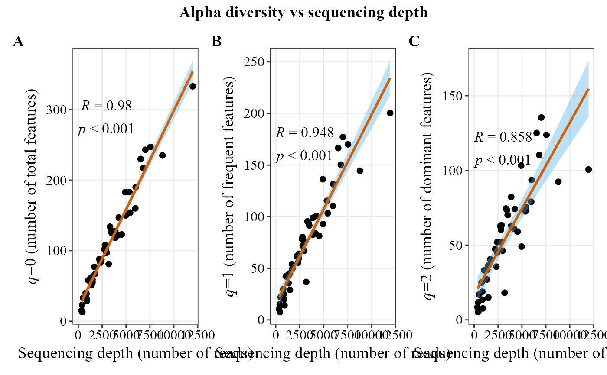

Computes Hill numbers (q = 0, 1, 2) per sample and plots each against
sequencing depth (total reads) as a scatter plot with a fitted regression
line and correlation coefficient, combining the three plots (q0,
q1, q2) into a single figure via patchwork, which stays modifiable
(e.g. p & ggplot2::theme(...) changes every panel).
Usage
alpha_hill_corr_plot(
table,
method = "spearman",
facet_orientation = "horizontal",
title = "default",
panel_label_case = "upper",
panel_labels = NULL,
panel_label_bold = TRUE,
save_table = FALSE,
table_filename = "hill.txt",
x_axis_title = "Sequencing depth (number of reads)"
)Arguments
- table
A data frame or matrix with samples as columns and taxa as rows. The first column must contain the OTUID, ASV, or species name.
- method
Character. Correlation method passed to
ggpubr::stat_cor. One of"spearman"(default, rank-based and robust to non-linear/non-normal relationships),"pearson", or"kendall".- facet_orientation
Whether the three q0/q1/q2 panels are arranged in a row ("horizontal", default) or a column ("vertical").
- title
Character. Title for the combined figure.
"default"(default) shows "Alpha diversity vs sequencing depth";"none"shows no title; any other string is used as-is.- panel_label_case
Character. Case of the auto-generated A/B/C panel tags. One of
"upper"(default, "A", "B", "C") or"lower"("a", "b", "c"). Ignored ifpanel_labelsis supplied.- panel_labels
Optional character vector of 3 custom panel tags (one per q0/q1/q2 panel), used as-is (e.g.
c("(a)", "(b)", "(c)")orc("a.", "b.", "c.")) — for journal styles thatpanel_label_casealone can't produce. Overridespanel_label_casewhen provided.- panel_label_bold
Logical. If
TRUE(default), panel tags are bold. Set toFALSEfor journals that require plain (non-bold) panel tags.- save_table
Logical. If
TRUE, saves the Hill numbers table to disk. DefaultFALSE.- table_filename
Character. File path/name for the saved table (used when
save_table = TRUE). Default"hill.txt".- x_axis_title
Title for the x-axis of the three panels. Default
"Sequencing depth (number of reads)".
Examples
table_path <- system.file("extdata", "tabla_bacteria.txt", package = "MicroBioMeta")
table <- read.delim(table_path, row.names = 1, check.names = FALSE)
# Always tagged A/B/C (see panel_label_case and panel_labels to customize)
alpha_hill_corr_plot(
table = table,
facet_orientation = "horizontal"
)
## Using Pearson correlation instead of the default Spearman
alpha_hill_corr_plot(
table = table,
method = "pearson"
)
